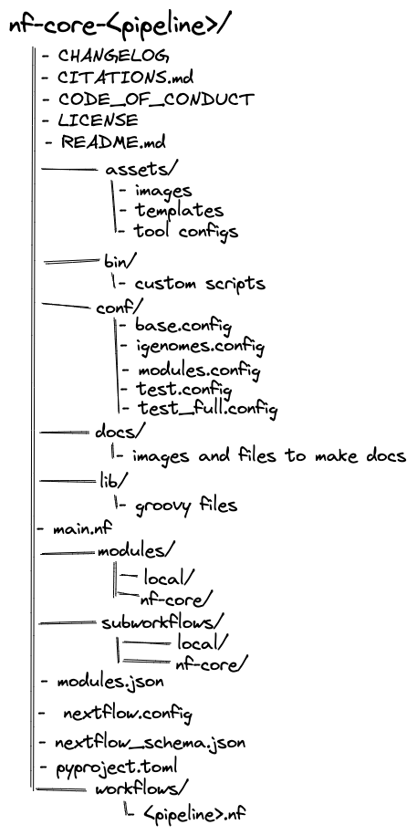

Configuring nf-core workflows

nf-core workflows follow a set of best practices and standardized conventions. nf-core workflows start from a common template and follow the same structure. Although you won’t need to edit code in the workflow project directory, having a basic understanding of the project structure will help you understand how to configure its execution and where files of interest are located.

Notably, while some of these files are already included in the nf-core workflow repository (e.g., the nextflow.config file in the nf-core workflow repository) others need to be created and stored locally (e.g., the nextflow.config in the launch directory). Similarly, others are only included using run options (e.g., -params-file, and -c).
Viewing parameters
Every nf-core workflow has a full list and description of parameters on the nf-core website. Some parameters will also have additional help text to help you understand when and how a parameter should be used.
For nf-core workflows, parameters and their descriptions can also be viewed in the command line using the run command with the --help parameter:
nextflow run nf-core/<workflow> --helpView the parameters for the nf-core/rnaseq pipeline.
Parameters for the nf-core/rnaseq workflow can be printed using the --help option:
nextflow run nf-core/rnaseq --helpConfiguration hierarchy
When a workflow is launched, Nextflow will look for configuration files in several locations. As each configuration file can contain conflicting settings, the sources are ranked to decide which settings to are applied. Configuration sources are reported below and listed in order of priority:
- Parameters specified on the command line (
--parameter) - Parameters that are provided using the
-params-fileoption - Config file specified using the
-coption - The config file named
nextflow.configin the current directory - The config file named
nextflow.configin the workflow project directory - The config file
$HOME/.nextflow/config - Values defined within the workflow script itself (e.g.,
main.nf)
For example, the default parameter parameter value that is included in the config file named nextflow.config in the workflow project directory can be overwritten using the command line.
Command line parameters
At the highest level, parameters can be customized at execution using the command line. Any parameter can be specified on the command line by prefixing the parameter name with a double dash (--):
nextflow nf-core/<workflow> --<parameter>While Nextflow options are prefixed with a single dash (-) all workflow parameters are prefixed with a double dash (--).
Default configuration settings
All parameters will have a default setting that is defined using the nextflow.config file in the workflow project directory.
Notably, several includeConfig statements in the nextflow.config file are used to include additional .config files from the conf/ folder. Each additional .config file contains categorized configuration information for your workflow execution, some of which can be optionally included:
base.config- Included by default.
- Generous resource allocations using labels.
- Does not specify any method for software management and expects software to be available (or specified elsewhere).
igenomes.config- Included by default.
- Default configuration to access reference files stored on AWS iGenomes.
modules.config- Included by default.
- Module-specific configuration options (both mandatory and optional).
test.config- Only included if specified as a profile.
- A configuration profile to test the workflow with a small test dataset.
test_full.config- Only included if specified as a profile.
- A configuration profile to test the workflow with a full-size test dataset.
Configuration files can also contain the definition of one or more profiles. A profile is a set of configuration attributes that can be activated when launching a workflow by using the -profile command option:
nextflow run nf-core/<workflow> -profile <profile>Profiles used by nf-core workflows include:
- Software management profiles
- Profiles for the management of software using software management tools, e.g.,
docker,singularity, andconda.
- Profiles for the management of software using software management tools, e.g.,
- Test profiles
- Profiles to execute the workflow with a standardized set of test data and parameters, e.g.,
testandtest_full.
- Profiles to execute the workflow with a standardized set of test data and parameters, e.g.,
Multiple profiles can be specified in a comma-separated list when you execute your command. The order of profiles is important as they will be read from left to right:
nextflow run nf-core/<workflow> -profile test,dockerBy default, nf-core workflows are required to define software containers and conda environments that can be activated using profiles. Although it is possible to run the workflows with software installed by other methods (e.g., environment modules or manual installation), most users find that Docker and Singularity are most convenient and reproducible.
Local configuration files
Nextflow will look for local configuration files that are external to the workflow project directory:
- Your home directory:
~/.nextflow/config - Your working directory:
nextflow.config - Custom paths specified on the command line:
-c <path/to/config>or-params-file <path/to/config>
Paramteter files
Parameter files are .json files that can contain an unlimited number of parameters:
{
"<parameter1_name>": 1,
"<parameter2_name>": "<string>",
"<parameter3_name>": true
}You can override default parameters by creating a custom .json file and passing it as a command-line argument using the -param-file option.
nextflow run nf-core/<workflow> -profile test,docker -param-file <path/to/params.json>Config files
Configuration files are .config files that can contain various workflow properties.
Configuration properties are organized into scopes by dot prefixing the property names with a scope identifier or grouping the properties in the same scope using the curly brackets notation. For example:
alpha.x = 1
alpha.y = 'string value..'Is equivalent to:
alpha {
x = 1
y = 'string value..'
}Importantly, the process scope allows you to configure workflow processes and is used extensively in nf-core workflows.
Modules in nf-core workflows make use of labels. By default, process resources are allocated in the conf/base.config file using the withLabel selector. For example:
process {
withLabel: big_mem {
cpus = 16
memory = 64.GB
}
}Similarly, the withName selector allows the configuration of a specific process by its name. By default, module parameters are defined in the conf/modules.config file. For example:
process {
withName: HELLO {
cpus = 4
memory = 8.GB
}
}Most tool arguments are defined in the conf/modules.conf file in the workflow code under the ext.args entry.
For example, if you were trying to overwrite arguments in the TRIMGALORE process in the nf-core/rnaseq workflow you could use the process scope:
process {
withName : ".*:TRIMGALORE" {
ext.args = { "<your custom parameter>" }
}However, in other cases, a workflow may use a tool multiple times in the workflow and you will need to specify an extended execution path of the module. For example:
process {
withName: "NFCORE_RNASEQ:RNASEQ:FASTQ_FASTQC_UMITOOLS_TRIMGALORE:TRIMGALORE" {
ext.args = "<your custom parameter>"
}
}It can be helpful to copy the name used in the conf/modules.conf to prevent any mistakes.
Custom .config file are passed in the command-line using the -c option.
nextflow run nf-core/<workflow> -profile test,docker -c custom.configYou can include multiple custom .config files at the same time by separating them using a ,.
A -params-file must be used to define parameters.
Parameters that are defined in the parameter block in custom.config files WILL NOT override defaults in nextflow.config for nf-core workflows.
A full list of configuration scopes can be found here.
All materials copyright Sydney Informatics Hub, University of Sydney